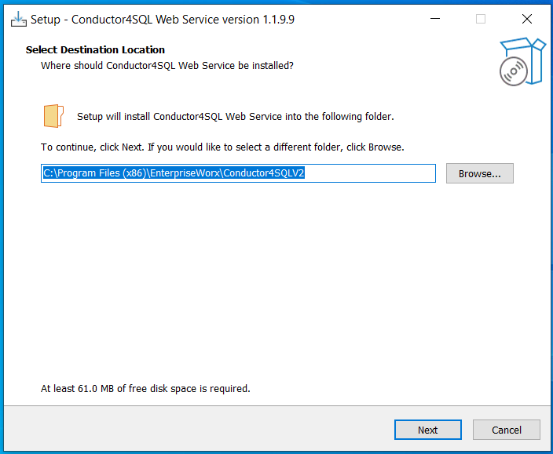
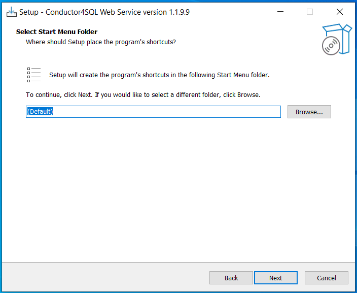
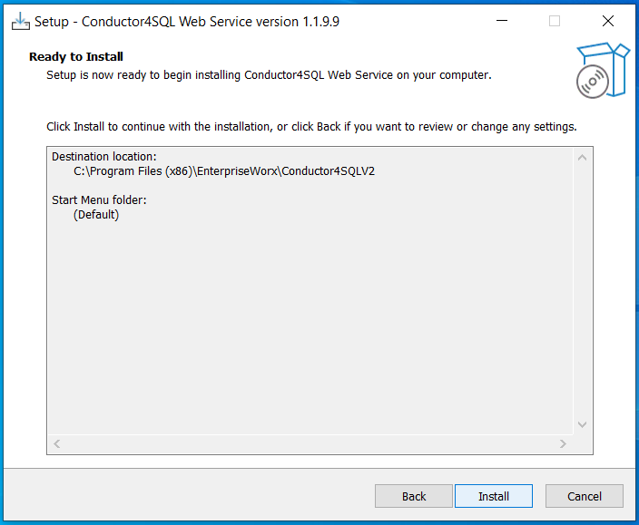
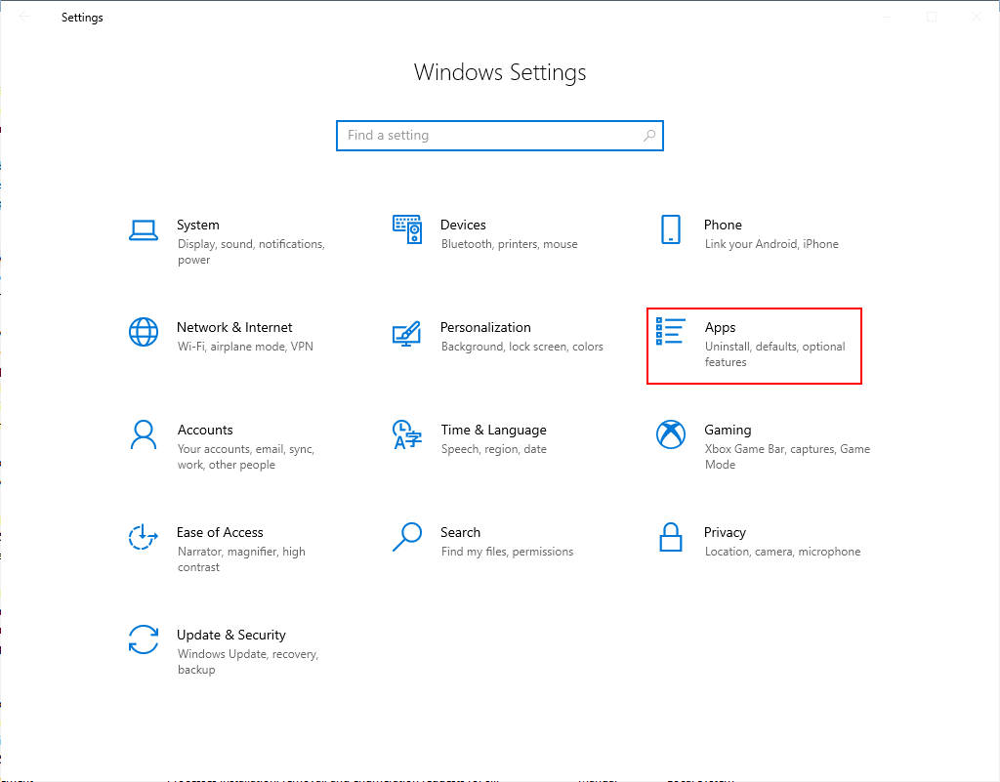
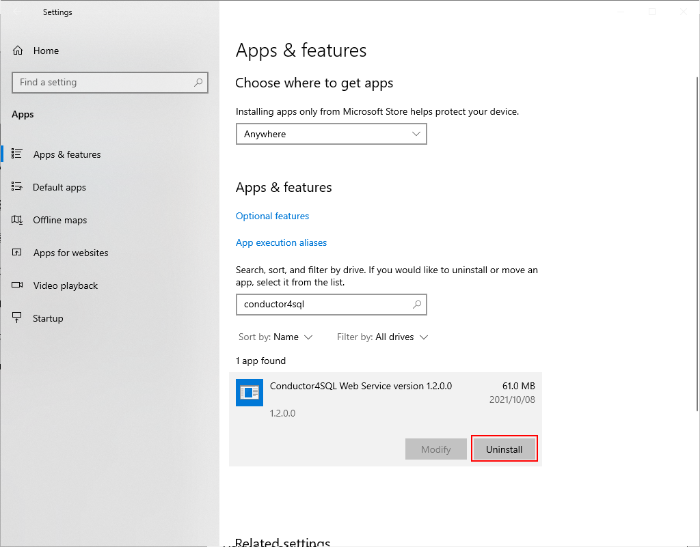
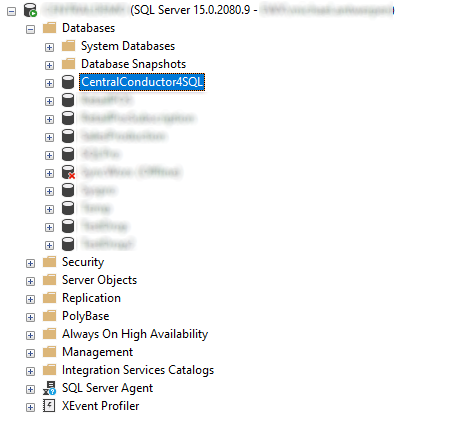

Introduction
Conductor4SQL web service installer will be provided via OneDrive URL link via email. The file will look something like ConductorSQLPro.Installer.1.3.3.0.exe. The version number will be different for each release.
Installation
To install the Conductor4SQL web service simply copy the installer executable over to the server that you wish to install the app.
You then will be prompted to setup installation:
  
Finally, after the setup has complete a browser window will open to http://localhost:8085 which will open the step by step web installer.
After configuration is complete, you can then access the service using http://localhost:8083 or https://localhost:8084. Adjust your firewall rules to access the application from an external browser.
Upgrades
Before you upgrade ConductorSQLPro, you'll first want to uninstall the old version of Conductor4SQLPro. Go to Windows Settings and open Apps

Search for ConductorSQLPro and select the Uninstall option

Then follow the steps for a new installation.
Removal
To uninstall the Conductor4SQL web service, go to Windows Settings and open Apps
Search for ConductorSQLPro and select the Uninstall option
Lastly, you'll need to drop the Conductor4SQLCentral database via SQL Server Management Studio.

Troubleshooting
Should you have issues with the ConductorSQLPro service, if you chose the standard installation folder, you'll find the application log files in C:\Program Files\EnterpriseWorx\ConductorSQLPro\Releases\{release-version-number}\Logs\. If the issue and resolution is not obvious please log a ticket with EWX support at support@ewx.co.za and zip and attach the log file for reference.